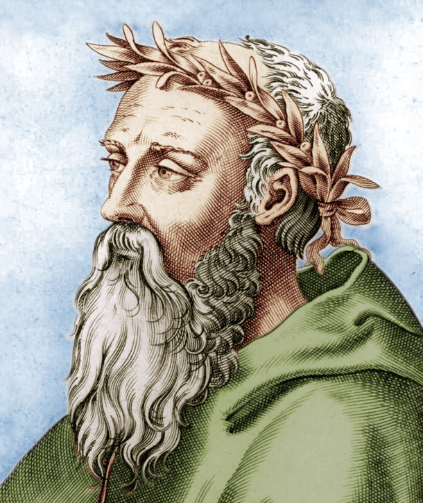

Hermetic Cosmology c.16th century

Heraclitus c.535–c.475 BC
Fundamental Cosmology of Hermetical Astrology
For historians, Hermetism is comprised of two main streams of thought, philosophical and technical. Since this section is dealing with concepts which would necessarily be part of the philosophical, this is indeed where they are to be found.Sources include the seventeen texts forming the so-called Corpus Hermeticum rediscovered in the Renaissance, the Poimander so popular throughout medieval times and the Kybalion from the 20th century. There are also many references and extracts to be found in the writings of the great thinkers of the past, such as the Stoics, Neoplatonists, Gnostics and Scholastics. So, we should start at the beginning.
Yet, before we do, there are some technical terms which should be clarified so as to make sense of them within the Hermetic context.
Logos and Cosmos
Two of the most important terms in Hermetism are "Logos" and "Cosmos". The earliest record of these two words being employed as technical terms was with Heraclitus of Ephesus (c.535–c.475 BC) who was very likely a contemporary of the writer(s) of the first Hermetic texts. For Heraclitus, Logos was in flux, in the same way as was meant by the earliest Hermetic texts.The Sophists were quick to pick up on the term Logos, and attributed the meaning of "discourse" to it. This was very likely because they were wandering philosophers readily giving speeches on any subject in return for money. Aristotle (c.384 c.322 BC) expanded the meaning into "reasoned discourse", alongside pathos and ethos, as the three parts of rhetoric.
At the end of the 5th century BC, the Stoics took another path referring to the "logos spermatikos" as the generative principle of the universe. Philo (c. 20 BC – c.50 AD) integrated the term into Jewish philosophy. From there, the Christian and hence modern usage, meaning "Word" or "Discourse", were settled upon for the word Logos.
The noun "Logos" is as old as the Greek language itself. It has acquired, over the course of time, a large number of different meanings, which only with difficulty can be
drawn into a simple unity.
(Encyclopedia of Religion, 2nd ed., 2005, p.5500).
Logos was a common term in the Greek language of the late sixth century BCE and is derived from légō (λέγω, "say", "speak") and has the basic meanings of "word" (spoken or written) or "utterance."
(Jack Lawson, "Mesopotamian Precursors to the Stoic Concept of Logos").
We must suppose, if the Ionian philosophers identified Word with Cosmic Reason and first principle, that they were induced and influenced by some well-known semi-philosophical use of the term "Word of the gods" as the personification of divine agency.
(S. Langdon, "The Babylonian Conception of the Logos").
(Encyclopedia of Religion, 2nd ed., 2005, p.5500).
Logos was a common term in the Greek language of the late sixth century BCE and is derived from légō (λέγω, "say", "speak") and has the basic meanings of "word" (spoken or written) or "utterance."
(Jack Lawson, "Mesopotamian Precursors to the Stoic Concept of Logos").
We must suppose, if the Ionian philosophers identified Word with Cosmic Reason and first principle, that they were induced and influenced by some well-known semi-philosophical use of the term "Word of the gods" as the personification of divine agency.
(S. Langdon, "The Babylonian Conception of the Logos").
Heraclitus of Ephesus,
a thinker ahead of his time
As a divine, universal governing principle of order and knowledge, Logos combines everything into an orderly structure, for which Heraclitus termed "Cosmos", a word which already meant "pattern", "adornment" and "order".
a thinker ahead of his time
For Heraclitus, there were two distinct versions of Cosmos. The "idios kosmos" (Greek: ίδιος κόσμος) is a person's "own world" or "private world" as distinguished from the "common world" or "common cosmos" (koinos kosmos). The origin of the term is attributed to fragment B89 (Diels–Kranz numbering) of the Pre-Socratic philosopher Heraclitus: "The waking have one common world, but the sleeping turn aside each into a world of his own." The term has various interpretations: idios kosmos is associated with dreaming, imagination, and delusion; koinos kosmos with wakefulness, reason, and consensus reality. (wikipedia)
Much, if not all of the ideas from Heraclitus are in tune with Hermetism. This is not surprising, for as Heraclitus himself says that he uses his Personal Logos to speak the truths of the true, Divine Logos. Although it was possibly the fashion at the time, Heraclitus did not take the word "Logos" to mean "discourse" (see T.M.Robinson, Heraclitus, Fragments, p.74-75). Instead, he more likely meant "true explanation" or "true statement" as "divine law". Heraclitus often used the terms "koinos logos" meaning "Common Logos" and "eidos logos" for "Personal Logos" (modern: "Soul's Logos").
Quotes from Heraclitus:
- The logos is common to all (fragment 2)
- Unless you expect the unexpected you will never find truth, for it is hard to discover and hard to attain. (fragment 18)
- What even the most respected man knows and defends are imaginings/opinions. (fragment 28A)
- Uncomprehending, even when they have heard the truth about things, they are like deaf people.
The saying 'absent while present' fits them well. (fragment 34)
- For those who are awake there is a single, common universe,
where as in sleep each person turns away into an own, private universe. (fragment 89)
- Thinking is common to all. (fragment 113)
- Soul possesses a logos which increases itself. (fragment 115)
Heraclitus held that the recurrent fire is everlasting, and that destiny is a logos which fashions existent things through the contrariety of the directions in which they tend to run. He tried to show that that logos which pervades (the) essence of the universe is (the) essence of destiny. Heraclitus says, then, that this 'common' and divine logos - by participation in which we become rational - is the yardstick of truth. So that which appears (such and such) to all in common is trustworthy (for it is grasped by the 'common' and divine logos), but that which strikes only an individual as (such-and-such) is - for the opposite reason - untrustworthy.
For having in these words expressly stated the view that we do and apprehend everything thanks to our participation in the divine logos, he goes on a little further, then adds: That is why it is necessary to follow that which is (common). Though the account (logos) is common, however, the many live as though they had a private understanding' (fragment 2). This logos is nothing else than an explanation (exposition, articulation, exegesis) of the mode of arrangement of the universe. That is why we speak truly whenever and in so far as we share in the recollection of it (i.e. of the logos) but are invariably mistaken on matters of private opinion.
So here and in these words he states clearly that the common logos is the yardstick (of truth); the things that appear such and such in common are trustworthy, as being judged by the common logos, whereas those that appear (such and such) to each person privately are false.
Psyche
In ancient Greek philosophy, the word psyche (Ancient Greek: ψυχή), literally meaning "life", was used to refer to the spiritual human soul. The modern world uses the word psyche to refer to the animating part of the human body, the meaning of which is derived from psychology, which describes psyche as "the totality of the human mind, conscious and unconscious". This version of psyche is held responsible for the enlivening of the body in a physical sense. In Latin this is called the "anima", which in ancient Greek was more often referred to as "bios" (also meaning life), and not psyche.This all comes about from a treatise about the psyche written by Aristotle, entitled "Peri Psyches" in Greek, "De Anima" in Latin, and "On The Soul" in English. But Aristotle also claimed there were three nested souls, the nutritive (as also in plants), sensitive (as also in animals) and logos (rational and only in humans). Of course, it is difficult to ascertain what makes a body alive. Whether it be a physical, natural, elivening force called life, or a non-physical, spiritual, wilfull and mindfull action of the mind. The latter is taken to be the case in Hermetism, both for the Divine Soul and the Personal Soul.
Nous
Another major term used in Hermetism is that of "nous" (Greek: νοῦς). This word generally means "mind", "intelligence", "intellect", "understanding" or "good sense". Heraclitus complained that "much learning does not teach understanding (nous)". The Hermetic Nous as the "Divine Mind" was ultimately responsible for bringing about the entire Cosmos, having called forth the "Divine Logos" which set the ball rolling. The Personal Nous, is at birth only having the potential for development, and through experience has the chance to increase personal intelligence, which in turn relies on the Divine Nous to grow. This relationship remains and in turn provides a connection to the Personal Logos which can access the Divine Logos.Furthermore, in Hermetic Philosophy, the terms have very special meanings which become more apparent by learning about the Cosmology of Hermes Trismegistus:
In the Beginning...
 The Ancient of Days
The Ancient of Days (William Blake c.1794)
depicting the crafstman,
first son of God, creator of all.
The English writer and artist William Blake said of Hermeticism, “Every age renews its powers from these works”.
The cultures which formed the basis included Babylonian, Sumerian, Akkadian, Egyptian and Anatolian. All of these originally had their own cosmologies, often with commonalities, and were eventually absorbed into the Hermetic Cosmology. It would be safe to say that the new Hermetic thought created its own cosmology to cover the concerns previously addressed by its predecessors. That's not unique. Even the young Johann Wolfgang von Goethe at the onset of Romanticism tried his hand at making up his own Cosmology.
The Hermetic Creation Myth
There are lots of creation myths stemming from the ancient world and naturally, Hermetism comes with its own. What is especially outstanding though, is the form in which the story is presented. All the way through the seventeen texts of the Corpus Hermeticism as well as the Pymander, the Nag Hammadi and others, is a technique employed whereby a mysterious all-knowing figure, usually Hermes himself or Poimandres, appears to an unsuspecting receiver of some great wisdom. Sometimes this person is called Tat, another time Asclepius or King AmmonThe Cosmos and The Logos
First and foremost is the Hermetic story of how the Cosmos was created but it might be best to first mention a few observations about the message of the Hermetic texts. Since God is All and is All Mind without material substance, the one thing God was lacking was to experience anything of substance. A vast and limitless mind thinking of nothing. The myth seems to tell of the urgency of bringing something into being which would gather experiences and provide a means to bring them back to report on life, the cosmos and everything. That means was, and still is, meant to be humanity.This is not automatic and naturally enough not everyone can achieve this aim without much effort and as Madame Blavatsky put it:
As the laggards in a race struggle and plod in their first quarter while the victor darts past the goal, so, in the race of immortality, some souls out-speed all the rest and reach the end, while their myriad competitors are toiling under the load of matter, close to the starting point. Some unfortunates fall out entirely, and lose all chance of the prize; some retrace their steps and begin again. This is what the Hindu dreads above all things — transmigration and reincarnation; only on other and inferior planets, never on this one.
(H. P. Blavatsky, Isis Unveiled, Vol.1 p346)
(H. P. Blavatsky, Isis Unveiled, Vol.1 p346)
The Cosmology and Cosmogony - The Details of Creation
The All (To Pan) was All Mind (Nous) and Light and was All God and contained that which became The Cosmos and Everything within it. The All was limitless, light and sweet. And a darkness began to settle like a coiled snake which turned into Moist Nature which tossed about and wailed with fiery smoke.Then out of The Light came the Holy Word, The Logos, which descended upon Nature. And upwards leapt fire, followed by air out of the earth and water, which were intermingled and too heavy to rise. Yet they were moved to hear by reason of The Spirit-Word-Logos pervading them.
The Created Elements
Fire, Air, Water and Earth
The Light prior to Moist Nature is God.
Fire, Air, Water and Earth
The Light-Word-Logos is the son of God.
What one hears and sees in oneself is the Lord's-Word-Logos but Mind is Father-God.
And they are a unity
(Note that these are referred to in this work as Personal Logos and Cosmic Logos).
Upon Creation of The Cosmos, The All, The Mind and God, all also came into existence. This was an act of Will within The All to bring about primary matter out of which everything is created. The primary matter in turn divided into the four elements of fire, air, water and earth.
God then ordered the four elements into becoming the seven heavens of the seven planets. Out of the materialising of the four elements, The Logos, The Word, sprang forth into being. Nous then ordered that the planets spin and move in their orbits. They moved within the 8th heaven of the fixed stars and all within the 9th heaven, The Primum Mobile.
The movement of the heavens brought forth creatures without reason or speech. The Earth was then separated from The Water and animals except for man were created. The God then created androgynous mankind, in God's own image, and handed over creation to mankind.
Comment from R. G. Gurgel Pereira (The Hermetic Logos, 2010, p.122):
Note that the process of creation is advanced by the power of speech/logos. As the manifestation of will, speech places sounds into the air which represent ideas. These are carried with the power by will, and the result of this action was creation. However, creation through speech was possible only due to the use of God‘s speech. God‘s logos guided Cosmos‘ Nous (the craftsman‘s mind) during his participation in the creation. Cosmos‘ main attributes were concerned with the handling of all forms of matter.
Note that the process of creation is advanced by the power of speech/logos. As the manifestation of will, speech places sounds into the air which represent ideas. These are carried with the power by will, and the result of this action was creation. However, creation through speech was possible only due to the use of God‘s speech. God‘s logos guided Cosmos‘ Nous (the craftsman‘s mind) during his participation in the creation. Cosmos‘ main attributes were concerned with the handling of all forms of matter.
"[...] the word of god leapt straight up to the pure craftwork of nature and united with the craftsman-mind (for the word was of the same substance). (ὁ τοῦ θεοῦ Λόγος εἰς τὸ καθαρὸν τῆς φύσεως δημιούργημα, καὶ νώθη τῶ δημιουργῶ Νῶ (ὁμοούσιος γὰρ
ἦν)).The weighty elements of nature were left behind, bereft of reason, so as to be mere matter. (καὶ κατελείφθη [τὰ] ἄλογα τὰ κατωφερῆ τῆς φύσεως στοιχεῖα, ὡς εἶναι ὕλην
μόνην)." (CH. I, 10).
The Cosmos, known as the craftsman, or as the first son of God, was also his assistant and helped Him create the physical world. However, the creation of the elements of nature was not the craftsman‘s concern. He just manipulated the elements that God previously produced.
Important Hermetic Works
Greek Astrological and Alchemical Technical Hermetica
The oldest known texts associated with Hermes Trismegistus are a number of astrological works which may go back as far as the second or third century BCE (list from Wikipedia):- The Salmeschoiniaka (The "Wandering of the Influences") (on the stars)
- The Nechepsos-Petosiris texts (fragments of various texts)
- The Art of Eudoxus (on astronomy per Hermes)
- The Liber Hermetis ("The Book of Hermes") (on the decans)
- The Brontologion (on the various effects of thunder)
- The Peri seismōn ("On earthquakes")
- The Holy Book of Asclepius Called Myriogenesis (on astrological medicine)
- The Fifteen Stars, Stones, Plants and Images (on astrological mineralogy and botany)
- The Cyranides is a work on healing magic
- The Greek Magical Papyri (practical instructions for spells and incantations)
- The Liber Sacer (astrological botany)
- From Hermes Trismegistus to Asclepius: On Plants and the Seven Planets (botanical)
- On the Plants of the Twelve Signs by Hermes Trismegistus
- Organon of Hermes Trismegistus
- Iatromathematika of Hermes Trismegistus to Ammon the Egyptian
- Panaretos, the Secret Method of Hermes Trismegistus
- On the Denomination and Power of the Twelve Places
Philosophical Hermetica
Caution is required when reading these texts. They have been extensively modified to suit the agendas of later philosophies, in particular Judaism, Sophism, Stoicism, Neoplatonism, Gnosticism and Christianity, to name but a few. This has led to the introduction of terms peculiar to those disciplines but alien to the original texts. Not only that, some parts have been removed, to better suit the tastes and expectations of the new audiences. Modern historians have turned this around to state that Hermetism is not only younger than those mentioned but borrowed from them. This of course is untrue because more ancient writers have already mentioned Hermetism and recent archaeological findings and historical research in museums have discovered Hermetic texts and horoscopes predating all of the other fields.- Asclepius, also known as the Perfect Discourse/Logos (in Latin, predating the Latin translations of the Corpus Hermeticum)
- Definitions of Hermes Trismegistus to Asclepius (which Jean-Pierre Mahé claims to be core teachings)
- The Discourse/Logos on the Eighth and Ninth or The Ogdoad Reveals the Ennead (in the Nag Hammadi findings)
- Stobaean Excerpts (contains a significant number of discourses and dialogues attributed to Hermes)
- Korē kosmou or The Daughter (or Eye) of the Cosmos (the longest of the Stobaean excerpts)
 Corpus Hermeticum
Corpus Hermeticum Latinised by Marsilio Ficino
The Names of the Treatises Contained in the Corpus Hermeticum
I. Discourse/Logos of Poimandres to Hermes Trismegistus (also known as Poemandres, Poemander or PimanderII. Hermes to Asclepius
III. A Sacred Discourse/Logos of Hermes
IV. A Discourse/Logos of Hermes to Tat: The mixing bowl or the monad
V. A Discourse/Logos of Hermes to Tat, his son: That god is invisible and entirely visible
VI. Hermes to Asclepius: That the good is in god alone and nowhere else
VII. That the greatest evil in mankind is ignorance concerning god
VIII. Hermes to Tat: That none of the things that are is destroyed, and they are mistaken who say that changes are deaths and destructions
IX. Hermes to Asclepius: On understanding and sensation: [That the beautiful and good are in god alone and nowhere else]
X. Hermes to Tat: The key
XI. Mind (Nous) to Hermes
XII. Hermes to Tat: On the mind shared in common
XIII. Hermes to Tat, a secret dialogue on the mountain: On being born again, and on the promise to be silent
XIV. Hermes to Asclepius: health of mind
XV. -----------------
XVI.[a] Asclepius to King Ammon: Definitions on god, matter, vice, fate, the sun, intellectual essence, divine essence, mankind, the arrangement of the plenitude, the seven stars, and mankind according to the image
XVII. Asclepius to King Ammon
XVIII. Tat to a king: On the soul hindered by the body's affections
(The Chapter numbered XV of early modern editions was once filled with an entry from the Suda (a tenth-century Byzantine encyclopedia) and three excerpts from Hermetic works preserved by Joannes Stobaeus (fl. fifth century), but this chapter was left out in later editions, which therefore contain no chapter XV. - wikipedia)
About
Hi, my name is Rod Schneider and I have created this website to illustrate how, with the help of astrology, that negativity can be converted into something more positive. The astrology being shown here is rooted in the most ancient inceptions derived from Hermetism. It is technical but in the hands of a practitioner already familiar with astrology has great potential to be helpful. There is also much help for non-astrologers to use astrology in a different manner, namely with cycles and phases.Comments and contributions are always welcome.
Contact: rodschneider35@gmail.com